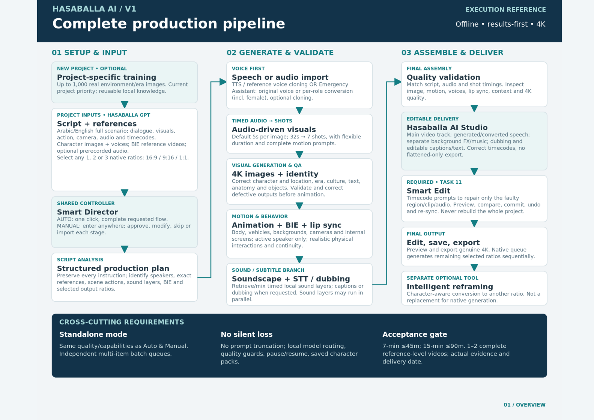

The Hasaballa AI platform will run fully offline 📴 — even if it’s 1 TB in size 💾, without negatively affecting the platform’s speed or efficiency.
🎯 Platform Goals
🎬 Hasaballa AI V1 — Complete Production Pipeline (Official Visual Reference)

Diagram clarification: “Emergency Assistant” refers to optional Voice-First Production (Task 7-R). Final V1 acceptance strictly requires at least TWO complete demo videos (Task 10-I). Detailed numbered requirements take precedence over diagram shorthand.
To produce unlimited videos at high speed —
without any subscriptions, APIs, or internet connection —
matching (at minimum) the quality shown in the following examples 👇
(Please watch all links or preview videos fully — this is the lowest acceptable quality standard.)
Watch the COMPLETE videos WITH AUDIO. These are third-party quality references, not examples claimed to have been generated by this platform. Their quality is the absolute minimum, and the finished V1 aims to surpass them.
⏱️ NON-NEGOTIABLE COMMERCIAL PRODUCTION PERFORMANCE
7-minute video ≤ 45 minutes | 15-minute video ≤ 90 minutes, including ALL steps and delivery into editable Hasaballa AI Studio.
The reference videos above are the MINIMUM quality standard. No compromise on real 4K, natural motion, identity or historical fidelity. 24–48 hours is commercially unacceptable.
Universal production: Projects may take place in any country and any historical period. Mandatory intensive Arabic-era reference knowledge is part of that global scope, alongside optional reference preparation for individual projects.
🧠 How to Use Hasaballa AI Platform
🟢 1. Smart Director – Automatic Mode (One Click – Full Auto Workflow)
🔹 The user writes the full script in the Hasaballa GPT chat window (scenes, images, voices, animation...).
🔹 Then clicks the 🎬 "Smart Director – Auto" button.
🔹 The system automatically generates everything based on the script:
🖼️ Image generation
🧍♂️ Character animation
🔊 Voice generation & cloning
👄 Lip sync
🎧 Background audio
🎞️ Final video with full timeline
✅ No manual steps required, but users can review or tweak results afterward.
🟡 2. Smart Director – Manual Mode (Full Hands-on Control)
🔹 The user writes the script in the Hasaballa GPT chat window.
🔹 Then clicks the 🛠️ "Smart Director – Manual" button.
🔹 Enter directly at ANY chosen stage — never forced to start at the beginning. Import finished voice, images or animation, skip any stage and move automatically to the next selected stage within Smart Director.
🔹 Preview each stage; approve, reject, edit or regenerate only that stage before continuing. Manual overrides remain saved.
🔹 In each stage, the user decides:
Generate images, import existing images, or skip
Generate a voice, import ready-made speech, or skip
Animate or not
Add background audio or skip
Enable lip sync or not; preview, approve/reject, edit or selectively regenerate stage output
🧩 Each generated element is automatically added to the final timeline.
✅ Best for advanced users and video creators who want precise control — without needing external editing software.
🔵 3. Use Each Tool Individually (Standalone Mode)
🔹 Every tool (Generate Image, Clone Voice, Animate, Sync, Add Background Audio...) has its own button.
🔹 The user can use any tool individually — for quick tasks or partial content creation.
(Example: generate just an image, tweak a voice clip, test background sound...)
✅ Ideal for:
Quick experiments
Building content step-by-step
Podcasts, teasers, visual tests
❌ But in this case, you’ll need to assemble the final video manually — or import the results into the editor or timeline yourself.
3-A 🧩 Standalone tools: full quality and multi-item batches Independent tools must perform to EXACTLY the same standards for quality, capabilities, accuracy and time as Smart Director. Support batched prompts, images, audio and paired lip-sync/animation jobs; no compulsory per-item clicks. Results can be imported and edited.
⚠️ Platform Design Requirement:
The platform must be built in full compatibility with the upcoming Hasaballa Engine update, as outlined in Task 19.
All tools, pipelines, and internal logic must be future-proof and designed to integrate seamlessly with Hasaballa Engine once released.
✅ 📋 Hasaballa AI Tasks
1️⃣ It will operate on a device running
💻 Windows 11 Home 64-bit, with an AMD Ryzen™ 9 9955HX (3.50 GHz, Fire Range), RTX 5090 🎮 (24 GB GDDR7), 64 GB DDR5 RAM 🧠, and 4TB M.2 NVMe SSD ⚡ — plus a 16.0" WQXGA 300Hz display 🖥️.
1-A ✅ Must be architected to fully support Hasaballa Engine integration (see Task 19).
All tools, pipelines, and system resources must be designed to connect seamlessly with the upcoming Hasaballa Engine — without needing any structural changes later.
This includes:
- Modular tool design with accessible internal APIs
- Background tasks (e.g., image, voice, animation) ready for Engine control
- Clear separation of logic to avoid future rework
🧠 Note: Hasaballa Engine is the platform’s core automation system — future updates depend on this integration being ready from day one.
2️⃣ 🚫 No internet, no cloud, no credits, no subscriptions — completely independent. All core models and assets must be commercially usable without subscription, credit charges, required online activation, or paid cloud/API inference.
4️⃣ 💬 Chat Window (Hasaballa GPT).
Quick Explanation:
chat window must be connected to one of the most powerful fully offline and completely free AI models, supports all Arabic dialects, full script, text to image, text to video,real Image to Image Ai.
4-0 📁 Optional project-specific training — FIRST project-input button Before EVERY project, allow optional file-picker selection of up to 1,000 genuine reference images of its exact country, locality and era: historical buildings, homes, streets, natural scenery, people, civilian/police/military dress, weapons, vehicles, animals, trees, vegetation, equipment and culture. Current-project references override contradictory earlier memories. Persist reusable geographic/era knowledge for later compatible projects. Entirely local, not mandatory foundation-model retraining. Control: its own FIRST optional button in Hasaballa GPT; choose up to 1,000 genuine reference photos of country, locality, era, buildings, people, uniforms, vehicles, animals, vegetation, objects and landscapes. Store reusable era/region knowledge. This is NOT the character reference-images button.
4-A 🪟 Display Window.
📺 Function: This is where the messages between the user and the offline AI model appear. ✅ It is essential that the chat window be connected to one of the most powerful fully offline and completely free AI models, such as:
🔹 Nous-Hermes-2 Mistral 7B
🔹 Mixtral (Mistral-MoE 12.9B)
🔹 Mixtral 8x7B – Q4_K_M
⚠️ This connection is a core requirement for ensuring high-quality, realistic responses, without relying on any online APIs.
It shows the full conversation, responses, and logs of the video/script generation process.
4-B 📤 Send Button.
🚀 Function: Sends the text or command written in the input box to the offline AI model (e.g. for chatting, generating images, analyzing scenarios...).
4-C 🎤 Microphone Button.
🎙️ Function: Allows the user to input voice commands or narration using speech-to-text.
Useful for dictating long scenarios or asking questions hands-free.
4-D 🖼️ Insert Reference Images — mapped to named characters. Function: Upload reference images for characters. The system uses them to maintain identity consistency across scenes.
Supported Characters: support eight or more characters simultaneously and expand dynamically using + Add Character for 10, 20, 30 or more people. Photos are only required for characters needing image references; no arbitrary eight-image upload obligation.
Per Character: up to 5 reference images covering different ages/angles (e.g., childhood, youth, profile).
Weighting: each reference image has a priority weight (0–100%). Weights are normalized per character.
Character Pack: explicitly tag images by character name/ID and link with THAT character’s own optional audio and BIE video references as a single reusable Character Pack; never mix characters.
Import/Export: Character Packs must be importable/exportable (local JSON file) for reuse across projects.
4-E 🔉 Insert Reference Audio (per named character). Each expandable character card has its own optional reference audio file picker, explicitly linked to a unique character ID.
🗣️ Function: Upload voice reference files for cloning each character’s voice.
Optional: voice references are not mandatory if a library voice or prerecorded voice is used; cloning a specific voice requires at least one appropriate reference recording.
Optional: up to 5 reference voices per character (e.g., childhood, youth, adult), but not required.
Image↔Voice↔BIE Linking: each file must have an explicit named character ID; optionally link to age-specific versions. If an age-specific voice is not present, fall back to THAT character’s main voice, never another character’s voice.
Weights: optional weight (0–100%) can be assigned per image/voice pair, normalized per character.
Usage: voices are used by the cloning tool to synthesize the character’s real voice during generation.
Auto Mode: in Auto Director Mode, the system automatically maps the correct voice to each scene based on script analysis (see 4-F-2).
Manual Mode: in Manual Director Mode, the user can assign and control each voice step-by-step.
Export/Import: Character Packs (images + voices + weights) must be exportable/importable as local JSON for reuse across projects.
4-E-1 🎥 BIE Reference Video Upload, assigned to each character Optionally accept approximately 2–4 reference videos for any one or all characters; learn unique gait, posture, sitting/standing, gestures, eye movement, blinking, gaze, face/brow/jaw, smiles, laughter, speech delivery, reaction and movement. Reuse in JSON character profiles contextually, preserving original face/voice/outfit and accurate lip-sync. Do not animate inactive characters unnecessarily. Includes human and stylized/fictional characters. Input UI: a repeatable Character Card for EVERY named person, with separate reference-images, reference-audio and BIE-videos upload fields. The + Add Character control must scale to 10, 20, 30 or more people. Show each imported file's character name/ID; allow assignment/reassignment before generation. Recommended 2–4 BIE videos per character, independently optional. Never mix character references; store behavioral data in reusable Character JSON.
4-E-2 🎙️ Prerecorded Narration / Dialogue Upload Distinct optional input button for a COMPLETE up-to-25-minute voice recording, original playback or per-character conversion as chosen. See the four Voice-First Production cases in 7-R; standard TTS remains available.
🎭 Behavioral Identity Engine (BIE) — complete requirements, 13 groups and 29 reference videos
Optional character-specific behavior reference videos with reusable saved motion signatures, alongside the original reference demonstrations and the complete Ultimate Goal.
Hasaballa AI produces historical and contemporary projects worldwide, including:
Historical documentaries
Contemporary and current affairs documentaries
Biographies
Crime reconstructions
Political events
Wars and military stories
Current affairs explanations
Educational storytelling videos
In many of these productions, the audience already knows the real person being portrayed.
Because of that:
Visual accuracy alone is not enough.
Voice accuracy alone is not enough.
Even having a perfectly cloned face and voice may still feel artificial if the character does not behave like the real person.
🧠 The Missing Layer: Behavioral Identity
Every individual has unique characteristics that go beyond appearance and voice.
Eye movements
Facial expressions
Eyebrow movements
Head motion
Hand gestures
Body posture
Walking style
Smile patterns
Laughing style
Speech rhythm
Pauses and timing
Emotional reactions
Conversation habits
Repeated gestures and mannerisms
These subtle behaviors are often what make a person instantly recognizable.
In many cases, they are more recognizable than the face itself.
To further illustrate the concept of Behavioral Identity, there are many globally recognized personalities whose identities are not defined solely by their appearance or voice, but also by highly distinctive behavioral patterns, gestures, expressions, movements, and mannerisms.
Examples include Michael Jackson, Charlie Chaplin, Mr. Bean, Jackie Chan, Cristiano Ronaldo and Muhammad Ali. Their expressions and personal movement are globally recognizable. The engine supports all real-world geographies and cultures, including Arab histories. However, these internationally recognized figures serve as useful examples of how Behavioral Identity can become a critical component of character realism and recognition.
🎬 Examples Included In This Website
The attached reference videos demonstrate this concept.
Across the examples, you will notice that different people have:
Distinct eye behavior
Unique facial expressions
Characteristic head movements
Consistent hand gestures
Specific speaking patterns
Personal laughter styles
Recognizable emotional reactions
Some individuals communicate heavily through eyebrow movement.
Others rely heavily on hand gestures.
Others have unique eye-contact behavior, gaze patterns, or body posture.
Several examples also show virtual or AI-generated characters that still maintain a believable personality through motion, expression, and performance.
The purpose of these examples is NOT to evaluate image quality alone.
The purpose is to evaluate Behavioral Realism.
📌 Example Group 1
Notice eye behavior, facial expressions, head movement, speaking style, mouth motion, and hand gestures.
These characteristics form a recognizable behavioral signature.
📌 Example Group 2
This individual demonstrates a distinctive combination of hand gestures and head movement patterns.
📌 Example Group 3
The same person appears in a different environment. Notice how behavioral identity remains recognizable despite context changes.
📌 Example Group 4
Observe eye focus, gaze direction, concentration behavior, eye widening, and attention patterns. These details contribute significantly to behavioral realism.
📌 Example Group 5
This individual exhibits several highly recognizable personal habits. Evaluate hand gestures, facial expressions, gaze behavior, emotional reactions, and laughter patterns separately in each video.
📌 Example Group 6
This individual communicates heavily through eyebrow movement. Observe how eyebrow behavior becomes a central component of emotional expression and communication.
📌 Example Group 7
Although this example is humorous, the facial performance is highly expressive. Observe how expressions alone can convey personality, emotion, and intent.
📌 Example Group 8
Pay attention to facial expressions, gaze behavior, speaking style, and walking motion. These examples demonstrate how personality is reflected through movement.
📌 Example Group 9
Observe speaking rhythm, facial expressions, pauses, timing, and communication style.
📌 Example Group 10
Please evaluate facial expressions, gaze direction, hand gestures, and pronunciation style. This example demonstrates that behavioral identity extends far beyond lip synchronization.
📌 Example Group 11
These examples portray a geographic location represented as a talking virtual character. Despite being artificial, the character remains believable through behavior, expression, laughter, eye movement, and gestures.
📌 Example Group 12
Observe how the football player maintains recognizable expressions, gaze behavior, speaking patterns, and personality traits even during stylized transformations.
📌 Example Group 13
These virtual comedy characters demonstrate realistic speech, facial performance, head movement, gaze behavior, and hand gestures despite being entirely fictional.
🎭 Character Behavioral Identity System
Behavioral Identity Engine
The engine extends character identity beyond Face Identity and Voice Identity by introducing a third layer:
Character Identity
Face + Voice + Behavior
Instead of:
Face + Voice
📦 Character Pack Structure
A Character Pack contains:
Reference Images
Reference Voices
The complete Character Pack also includes:
Reference Behavior Videos
Resulting in:
Character Pack = Images + Voices + Behavior Videos
🎥 Reference Behavior Videos
The user may optionally upload one or more videos showing:
Natural speech
Interviews
Public appearances
Historical recordings
Casual conversations
Walking footage
The system analyzes behavioral information and saves a reusable Motion Profile for that character.
🧠 Motion Profile Analysis
Eye movement patterns
Facial expression tendencies
Gesture frequency
Head movement habits
Smile characteristics
Laugh characteristics
Body language
Speaking rhythm
Communication style
🧠 Smart Director Integration
A Motion Profile is applied by:
Smart Director – Automatic Mode
Smart Director – Manual Mode
Image Animation Tool
Video Generation Tool
so that generated characters follow:
Their natural gestures
Their typical facial expressions
Their characteristic gaze behavior
Their personal speaking style
Their recognizable movement patterns
Their unique emotional reactions
instead of relying solely on generic animation behavior.
Behavioral identity is also required for non-human characters. As demonstrated in (see Example Groups 11 and 13 above), realistic behavioral identity is not limited to humans and may also apply to virtual, symbolic, and fictional characters.
The Behavioral Identity system also supports:
Cartoon characters
Clay characters
Talking animals
Historical mascots
Fictional personalities
Symbolic characters
Humanized objects
Humanized locations
Humanized countries
Humanized concepts
Examples of this can be seen in the attached references where:
A football player appears in a virtual interview (see Example Group 12 above).
A geographic location is represented as a talking character(see Example Group 11 above).
Fictional comedy characters interact naturally(see Example Group 13 above).
The generated personalities remain believable because behavior is preserved, not only appearance.
🎯 Ultimate Goal
The goal is not only to reproduce how a character looks and sounds.
The goal is to reproduce how the character behaves, reacts, gestures, smiles, laughs, gazes, speaks, and moves in a historically accurate and recognizable way.
By extending identity beyond appearance and voice, Hasaballa AI could potentially become one of the few AI platforms capable of preserving:
Visual Identity
Voice Identity
Behavioral Identity
This capability could become one of the most unique, advanced, and differentiating features of the Hasaballa AI Platform, while striving for the highest possible levels of realism, consistency, behavioral accuracy, quality, and scalability.
4-F ✍️ Text & Command Input Box.
(The number of characters allowed to be entered in the field must not be less than 15,000 characters).
📝 Function:
- Write anything here, including:
- Prompts for images.
- Commands for video generation.
🤖 The AI understands and parses the scenario, dividing it into 🎬 scenes, 🌆 backgrounds, 🔊 sounds, and 👄 syncing instructions — and passes them to the 🧠 Smart Director (Manual and Automatic generations) for execution.
4-F-1 ✍️ The user can write the full script in Arabic (all dialects) or English — including all 🎬 scenes, 🌆 visual backgrounds, and 🔊 sound elements.
Then, the 🧠 Smart Director (Manual or Automatic generation modes) starts processing everything based on the written input.
Supported capabilities:
-🖼️ Text to Image.
-🎥 Text to Video.
-🎨 Real image to Image (AI).
-🧬 Generate visuals and audio based on 🖼️ reference images and 🔊 reference voices — according to the details provided in the scenario.
-🌅 Generate background visuals and ambient sound as specified in the written script.
-👄 Lip-syncing for characters, based on scene instructions.
4-F-1-1
Hasaballa GPT Chat – Scenario Analysis Performance:
Capable of analyzing full scripts (≈15 scenes, each with visual and voice requirements) in just 6 to 10 seconds.
Optimized for rapid parsing, semantic breakdown, and routing tasks across all tools — whether running in Auto or Manual Smart Director modes.
4-F-2 📝 Intelligent Reference Voice Mapping.
> 🧠 The system must analyze the written script (inside the Chat Window) and decide automatically whether to use the reference voice or not — based on the text.
🎙️ There are two possible voice usage modes:
4-F-2-1 🗣️ Narration Mode.
(e.g., storytelling, biography, documentary):
Only one voice is used (either cloned or generated).
This voice narrates the entire script — no character-specific dialogues.
In this case, The system should ignore all other reference voices, even if reference images exist.
4-F-2-2 👥 Dialogue Mode.
(e.g., podcast, film, multi-character scenes):
- Multiple reference images are used, each linked to a unique reference voice.
- Each character/image will “speak” using its assigned voice.
- Voice and image must always match (as a Character Pack).
4-F-2-3 🤖 The system must decide automatically, based on the text: Example 1: "Soad: Why did I tell all this?" → use Soad’s voice. Example 2: "Farid appears in the scene silently." → use the image only, no voice. Example 3: "The story is narrated entirely by Soad" → use only Soad’s voice, ignore all others.
⚙️ Integration:
- Works directly in the Chat Window (during script writing).
- Fully integrates with the Smart Director (automatic & manual modes).
- The system must intelligently select or skip voice usage depending on text meaning.
4-F-3 🎛️ Multilayered Background Audio Detection.
When the user writes in the Chat Window that multiple background sounds are present in a scene (e.g., music + applause + speech), the system must:
- Detect each background sound type individually.
- Assign each one to a separate audio track in the timeline.
- Automatically balance all background layers with the main narration.
- Send these structured instructions to the Smart Director for proper rendering. ✍️ Example (written by user in Hasaballa GPT Chat Window):
"Amid patriotic music and audience applause, Nasser gives a speech in the background while the narrator explains what happened."
✅ The system must auto-generate: 🎵 Track 1: Background patriotic music. 👏 Track 2: Audience applause. 📣 Track 3: Nasser’s speech.
🎙️ Main narration (spoken by the narrator).
🧠 All of them must be blended smoothly in timing and volume.
📽️ For example: preview scenes
4-F-4 🧠 Detect Reference Voices Used as Background Audio.
When analyzing the written script, the system must detect when a background audio layer is actually a reference voice (not a generic sound effect). It must:
◼️ Recognize that the background sound is from a known character.
◼️ Mark it as a reference voice to be processed properly.
◼️ Trigger both:
◉Lip sync activation if the character’s image is present.
◉Retrieval or generation of the correct voice from Section 7.
◼️ Send this instruction to the Background Audio Engine (Section 8).
🧠 This task is critical for:
◉Differentiating real character voices from general ambience.
◉Maintaining consistency between script, voice, and image.
◉Enabling full scene automation without manual intervention.
4-F-5 🧠 Lip Sync Activation Logic (via Chat Script Analysis).
> The Chat Window (Hasaballa GPT) is the primary controller for deciding when and how lip sync is triggered(In the automatic and manual smart output mode).
- It analyzes the written script and automatically assigns isTalking:
true to the correct reference image — based on scene type and text context.
✅ Until no confusion between speaking and silent characters.
✅ And there will be natural results in storytelling, podcasts, and films.
🔄 The system must handle 4 main cases:👇
4-F-5-1 🗣️ Narration Mode.
🎙️When A single character (e.g., Soad) narrates the story. Their lips should move in sync with the narration audio.
- Her image = isTalking: true.
- All other characters appear visually only, with isTalking: false.
- No lip sync for background characters during narration.
📽️ For example: preview scenes
4-F-5-2 👥 Dialogue Mode (Multi-character conversation).
🎬 When the script includes multiple characters speaking:
- Each speaking character must have lip-sync based on their lines.
- 🧠 Lip sync must only apply to the currently speaking character.
- Other characters should remain visually neutral (no lip movement) until their turn.
📽️ For example: preview scenes
4-F-5-3 👪 Mixed Mode (Narration + Side Dialogue).
📝In some scenes, While narration is ongoing, a short side conversation may happen.
- During that moment, narration lip sync must pause.
👄Only in the side dialogue speaker’s lips should move.
- If it’s the narrator (e.g., Soad) having the side talk, her lips move for the actual spoken line (in the side Dialogue), not the narration.
> 📌 After the dialogue ends, narration lip sync resumes.
📽️ For example: preview scenes
4-F-5-4 🚫 Narration Without Lip Sync.
- The user must be able to disable lip sync for the reference image that narrates the story — via a clear command in the Chat Window. Example: “Soad narrates silently without lip movement.”
📽️ For example: preview scenes
4-F-6 📡 Smart Connectivity Control (Optional Internet Access).
In Hasaballa GPT, the chat interface includes two optional control buttons: 🔍 “Smart Internet Access” and 📴 “Disconnect – Return to Offline Mode”
🔐 These buttons help maintain the platform’s default offline identity, while giving the user full control when external information is needed.
4-F-6-1 🔍 “Smart Internet Access”– When clicked, the system is allowed to perform external search (e.g., via API or direct query) only if the offline model cannot find the answer.
- This connection is never automatic.
4-F-6-2 📴 “Disconnect – Return to Offline Mode”– When clicked, it fully cuts any online lookup attempts and forces the assistant to rely only on internal data/models.
4-F-7 🎚 Inline Voice Speed Command (Prompt-Based) Function: The scenario text can include a strict command that sets narration/dialogue speed for generation/cloning (routes to 7-Q).
Scope: place at the top of a scene block to apply to that scene; place before a line to apply to that line only.
Behavior: formant-preserving time-stretch; auto viseme/phoneme re-alignment; timeline length updates.
Acceptance: ≥99% correct parsing & routing to 7-Q.
4-F-8 🛡️ No token-limit truncation, loss or ignored prompt instructions Input ≥15,000 characters; extract scene, original character and location, period, object, physical action, exact text, camera, movement, audio, speech, emotion and timestamps. No relevant instruction may disappear between stages. Explicit user commands override automatic settings, including stationary-camera instructions; track all downstream execution. Non-negotiable: never silently cut, delete, shorten, omit or rewrite mandatory instructions because of model token limits. Never require manual script splitting. If internal lossless staged processing is technically unavoidable, retain the complete original verbatim and verify every instruction and cross-scene constraint reaches the correct downstream tools. Explicitly report any processing failure rather than outputting an incomplete result.
4-G ⬆️ Expand Input Box.
🔽 Function: Enlarges the input box for easier writing of long scripts or commands.
4-H 📐 Native Output Dimensions — choose any one, two or all three.
⚙️ Select 16:9, 9:16 and/or 1:1 at project input. ONE click generates the selected versions sequentially, each natively composed/generated from scratch using the same script, story, timing and references. Stretching/cropping a master video is not the primary method. See separate optional intelligent reframing (10-H).
🟥 16:9 → YouTube
🟪 9:16 → TikTok / Shorts
🟩 1:1 → Instagram
4-I ⚙️ Works both automatically and manually with Smart Director.
(from chat window to final video).
🎬 Smart Director Buttons:
1️⃣Scenario input ➜ 2️⃣Press Auto Director ➜ 3️⃣Analyze ➜ 4️⃣Generate / Import Final Speech ➜ 5️⃣Generate Visuals ➜ 6️⃣Add Soundscape ➜ 7️⃣Animate & Lip Sync ➜ 8️⃣Send to Timeline Editor (HASABALLA_AI_STUDIO)
4-I-0 🎚️ Voice-First Planning
• The system must always generate/import the scene audio first (narration or dialogue).
• Based on the effective audio duration (after silence removal), the system automatically decides the number of images/visuals needed for the scene.
• Formula: images_per_scene = ceil( voice_duration_sec / seconds_per_image ), default = 5s per image.
• Adequacy Check: If images are too many or too few (±20% tolerance), the system shows warnings and offers:
– 🔧 Auto-Fix (adjust automatically)
– ✍️ Override (user manually increases/decreases)
• Timeline Preview must show:
– Voice waveform
– Beat markers (every 5s)
– Thumbnails aligned with beats
• This guarantees visuals match the pacing of the narration.
4-I-1 🧠 Auto Generation Button.
📦 Automatically analyzes everything written in the input box, sends it to all the internal tools, and generates the final video + timeline without any user interaction.
4-I-2
🛠️ Manual Generation Button.
Lets the user enter the workflow DIRECTLY at any stage, import existing files, skip or selectively rerun a stage, and advance automatically to the next chosen stage, with persistent manual overrides and full control over:
- Image generation
- Audio selection
- Lip sync activation
- Final assembly
4-I-2-1 ✅ Manual Director – Visual Tracker Requirement:
The manual Smart Director must include a visual progress bar or step tracker (Task Timeline), showing the current tool in use, completed stages, and remaining tasks. This helps the user follow the video generation flow step-by-step.
4-J
📁 Saved Projects Panel.
💾 Function: Shows all previously saved projects.
These are stored automatically and can be reopened later for editing or regenerating parts of the video.
4-K ✅ Hasaballa GPT – Acceptance Criteria
Ultra-realistic Image Generation
🖼️ Ultra-realistic Image Generation
Standalone Mode — Full User Control
🎯 Purpose:
This tool lets the user generate ultra-realistic visual scenes (photos) based on a text prompt, with support for Arabic, custom aspect ratios, and character consistency.
2. Text Prompt Input
Describe the visual scene in natural language: Example: "A man and a woman talking in a cafe"
✅ Supports both Arabic and English prompts.
3. Reference Images — Dynamic Character Slots
Upload or select up to five face references for each of any number of project characters, including 10, 20 and 30+ people; slots are created dynamically using + Add Character.
The system will use these faces to render people in the generated scene.
4. Reference Voice Icons
Each image may be linked to a voice reference for use in animation later.
5. Character Tagging
Optional: Assign a name (e.g., “Soad”) to help match this face to script instructions.
6. Arabic Text Checkbox
Enable this if you want Arabic words or signs to appear correctly in the image (e.g., café sign, book cover, poster...).
7. Advanced Options
- Identity Lock: Ensures character face remains identical across all images
- Cinematic Lighting: Adds dramatic shadows, soft light, and depth for storytelling scenes
8. Main Actions
🔵 Generate: Starts image generation using your text + settings
🟦 Update Reference Image: Replace one of the reference faces
⏭️ Skip This Step: Bypasses this stage and moves to the next (for text-only scenarios)
5-A-1
🖼️ Image Generation Tool – High-Quality Visual Output Performance:
Generates high-resolution character visuals and cinematic scenes using advanced image diffusion techniques.
Each image (at highest quality) is generated in approximately 10 to 18 seconds, depending on complexity and number of characters per scene. Output Quality:
Supports ultra-detailed 4K image synthesis, consistent with film-grade visuals. Ideal for dramatic facial expressions, period-accurate costumes, and realistic lighting.
5-A-2
🖼️ Text to Image.
5-A-3
🎨 Real image to Image (AI)
5-A-4
🧬 Generate visuals and audio based on 🖼️ reference images and 🔊 reference voices
5-B 👥 Reference images (support at least eight different characters concurrently and dynamically expand to 10, 20, 30+ with explicit per-character reference mapping, without identity switching).
5-B-2 🎙️Each reference image should ideally be linked to a unique reference voice, forming a Character Pack (Image + Voice).
- This pairing enables the system to use the correct voice for each image during video generation (especially in Dialogue Mode).
- 🧠 The decision to use the voice or not is made during script writing inside the Chat Window — based on the context and structure of the text (see Task 4-F-2).
- The Smart Director simply follows this logic during generation (automatic or manual).
5-C 🔒 Identity lock button. - must match reference image with 99.9% (ideally 100%) accuracy.
5-C-1 🧪 Auto-Quality Guard (Negative + Seed)
- system must automatically use internal negative prompts to avoid defects (hands, eyes, text).
- system must lock and reuse seeds to ensure identity consistency across all scenes.
- user should not need to enter negatives or seeds manually. (runs silently in the background — no manual prompts or seed input from user)
5-C-2 🧷 Outfit/Style Lock
- lock costume/era/hair/makeup as part of the identity profile.
- must remain stable across all generated scenes unless user explicitly changes it. (default: text-driven & runs in background; no need for a visible button)
5-D 🔁 Ability to update/change reference image at any time across scenes.
5-E 📂 Dropdown list for character reference images.
5-F 🏆 Minimum visual quality must match examples in the above video links.
5-G 📝 Exact Arabic AND English text generated naturally in the image, with proper characters, orthography, perspective, lighting and material geometry. Preserve the user-provided wording and flag suspected original spelling errors instead of silently rewriting. AND Especially 100% correct Arabic text in generated images.
📽️ For example: preview scenes
5-P 📰 Complete newspapers, movie posters, books and visual inserts Authentic whole newspaper page with masthead, logo, complete headline/article, proper photographs/body content and handling while folded, held, pinned or lying on a table. Correct movie posters (original insertion or newly generated with real references), covers, billboards, shop/building/road signs, blackboards, framed pictures and all text/images with real geometric continuity. AND Especially 100% correct Arabic text in generated images.
5-H 🔽 Skip This Step Button
Add a clear "⏭️ Skip this step" button to this stage.
🔹 If the user chooses to skip this stage, the system must:
- 🚫 Ignore this step during video generation.
- ✅ Continue smoothly to the next stage.
- ⚠️ Not show any error or interruption in the process.
🧠 The Smart Director must later adjust the final timeline accordingly..
5-I ⚙️How to Use the Image Generation
5-I-1 🔄 Must work in both modes with the Smart Director:
- 🟢 Automatic Mode: Full pipeline from chat window → images → voices → animation → lip sync → final video.
- 🟡 Manual Mode: Step-by-step control for each production stage.
5-I-2 🖼️ This tool must also be usable independently (standalone mode):
- Example: If the user only needs Image Generation, the tool should work fully on its own.
- ✅ All tools (Image, Voice, Animation, Lip-Sync, etc.) must support both usages at the same time:
1. Working together with Smart Director (Auto & Manual).
2. Working separately as standalone tools, completely independent from Smart Director.
5-J 🎯 Evaluation Conditions for Task 5:
✅ The following four conditions must be strictly met:
1. 🧍♂️ Identity Persistence Across Scenes
The same character must appear identically across scenes using consistent embeddings or seed values.
2. 🧠 Smart Reference Matching
The system must match character names in the script to their tagged reference images.
3. 🎞️ Timeline Placement
Each image must be inserted into the video timeline at the correct moment, or skipped smoothly if needed.
4. ✅ Quality Evaluation Criteria
Images will be reviewed for facial accuracy (≥ 99%), lighting, Arabic text precision, and realism.
5-K 🔄Auto-Rotation
✅ If multiple image generation models are available, the platform automatically selects the best one based on the prompt content.
📦 Available from the first release, and further enhanced by Hasaballa Engine after the first platform update.
5-L 🗂️ Save/Export Identity Snapshot
- save the exact look (face + outfit/style/era) of a generated character as a reusable snapshot.
- allow exporting this snapshot for use in future scenes/projects without re‑generating the character.
5-L-1 ♻️ Reuse Exact Look in New Scenes
- enable creating new scenes with the same saved look (face + outfit/style) instantly.
- user should not need to re‑generate or tweak prompts to keep the identity and outfit stable.
5-M 🌍 Worldwide Historical & Geographical Accuracy, with Intensive Arab-Era Reference Packs
The Image Generation tool must authentically represent all world regions and historical periods. Mandatory intensive Arab and Middle Eastern reference packs cover eras from
prehistoric Egypt (circa 7000 BCE) and the Pharaonic dynastic periods (from circa 3100 BCE) through Islamic dynasties (Umayyad, Abbasid, Mamluk, Ottoman),
to the 20th century (1950s–1970s), and finally the modern era (2000–2025).The same applies to the rest of the Arab countries; however, since our projects span the entire globe, the platform must necessarily cover the whole world as well.
5-M-1 🧬 Era-specific LoRAs/Embeddings
- Fine-tuned models for clothing, architecture, and environments of each era.
5-M-2 🖼️ Historical Reference Packs
- Integrated offline library of Arab houses, markets, streets, and daily life across centuries.
5-M-3 📜 Prompt Presets per Era
- Ready-made presets: "Pharaonic Egypt", "Ottoman Cairo", "1950s Beirut", "Modern Arab City 2025".
5-M-4 👤 Authentic Arab Features
- Identity lock ensures Arab/Middle Eastern facial traits (skin tone, hair, eyes, face shape).
5-M-5 👗 Outfit/Style Lock Extension
- Support for era-accurate clothing (pharaonic robes, Islamic abayas, Ottoman caftans, 1960s dresses, modern Arab fashion).
5-M-6 🏛️ Environment & Architecture
- ControlNet-driven generation for Arab marketplaces, Islamic architecture, and modern skylines.
5-M-7 🔤 Arabic Text Guarantee
- All text inside images (signs, newspapers, posters) must be 100% correct Arabic, with an optional manual correction step.
5-M-8 🏆 Expanded Evaluation Criteria
- Review outputs for: cultural/era accuracy, Arab identity ≥99%, correct Arabic text, lighting, and realism.
5-N 🏠 Exactly repeat recurring places across scenes A house, apartment, farm, street, room, landscape, phone booth and props must remain exactly the same from every camera angle and repeated scene; changing camera motion or weather must not change their architecture, object layout, walls, doors or historical environment.
5-O 🧬 Fix anatomy and objects at the root — zero distortions Zero accepted malformed faces, ears, hands, fingers, limbs, body posture, wrong gaze, unnatural hand grip, intersecting/merged objects, translucent flesh, clothing glitches, invented characters or era contamination. Automated defect gates, visual checking and selective repairs target causes, not cosmetically hide recurring failures.
🧠 Image Animation – How It Works
🎯 Purpose:
This tool animates still images by detecting faces, assigning voices, and syncing lip/body motion to create realistic video scenes.
🛠️ Step-by-Step Guide:
Describe the Animation
Type what you want to happen in the scene (e.g., “Woman explains a story, man reacts seriously”).
This helps guide the animation logic (especially when voice is not yet uploaded).
Animation Modes
- Full Body Animation: Activates full motion (head + shoulders + arms).
- Background Motion: Adds subtle ambient movement (trees, curtains, people…).
- Lip Sync: Synchronizes mouth movement to the assigned audio.
Face Detection
The tool automatically detects faces from the uploaded image and shows them (Face 1, Face 2…).
You can assign voice to each face individually.
Voice Assignment
Click the 🎤 icon or download arrow under each face to link a voice file (e.g., “soad_voice.wav”).
Only the speaking face will have active lip movement during its dialogue part.
Skip Option
Use the Skip button to bypass this step if you don’t need animation for the current scene.
Generate
Click Generate Video to render the animation using the chosen settings and assigned audio.
6️⃣ Image Animation — must match the quality in reference videos 🎭.
6-A-1 🏃♂️ Full-Body Dynamic and Realistic Motion
- Supports complex and realistic whole-body movement: running, walking, fighting, escaping, cinematic battle actions.
- Includes synchronization of:
• Arms and shoulders (punching, defensive moves)
• Legs and steps (running, walking, directional changes)
• Upper body twists and tilts (action poses, reactions)
- Must integrate seamlessly with facial animation and lip sync.
- 🎯 Target: Achieve realistic body motion suitable for war, drama, and action movie scenes.
- 🔄 Fully controlled by Smart Director timeline (automatic + manual).
📽️ For example: preview scenes
6-A-2
🎭 Image Animation & Lip Sync Tool – Realistic Motion Performance:
Delivers high-fidelity face and lip animation, synced to the generated voice, with realistic eye and ambient motion.
Each image is animated in 12 to 20 seconds, ensuring expressive and natural delivery. Output Quality:
Seamless lip sync and cinematic animation style, compatible with any background or scene type.
📽️ For example: preview scenes
6-A-2-1
🖼️ Image-To-Video & Real image transformation and adaptation
Real image to AI image with controllable adaptation strength; higher/lower value
changes transformation degree, not distortion; preserve real identity, anatomy, detail,
skin/lighting, natural style. Can use actual photographs directly for animation and place
original content inside generated scenes. Existing photo/poster/document/billboard
content must remain unchanged, including original text, faces and small details, while
integrating realistically as a surface/element.
📽️ For example: preview scenes
6-A-2-2
📝 Text-To-Video
🎯 Ensures professional "cinematic camera feel" without manual editing
6-A-5 💥 Action Effects Layer (Cinematic Add-ons)
- Add cinematic action effects synced with animation and Smart Director timeline:
Explosions, smoke, dust overlays 🌪️💥
Camera Shake 📸 (explosion, hit, fall)
Flash / Gunfire ⚡🔫 (bullets, bombs, rockets)
Sound FX 🔊 (steps, gunshots, screams, collisions)
Slow Motion 🕒 (dramatic falls, jumps, punches)
Camera blends 🎬 (fast zooms + shakes for chase/fight scenes)
- Supports imaginative cinematic effects for extreme scenarios:
• Example: character falling from a plane with fire trails 🔥
• Example: mid-air hit by a rocket 🚀💥
- 🎯 Goal: deliver realistic + imaginative war/action/escape sequences with maximum cinematic feel.
- 🔘 These effects must be optional and toggleable per scene, with full control available both via the Smart Director buttons (Auto/Manual) and through the Animation Tool independently.
- 🎬 All action effects must be fully compatible and blendable with Camera Motion Control (Zoom / Pan / Tilt / Rotate) to ensure a smooth, cinematic layer.
📽️ For example: preview scenes
6-B 🏙️ Background motion too (e.g. people walking in streets, trees moving, curtains swaying, birds, animals, kids playing).
📽️ For example: preview scenes
6-B-1 🖥️ Generate or insert video inside a TV, phone, tablet or other screen — TWO independent methods: (1) generate the exact on-screen animated scene from the user’s complete prompt; (2) insert the user’s imported existing video. Preserve screen tracking, perspective, movement, lighting, edges, orientation and the surrounding scene.
📽️ For example: preview scenes
6-C 👄 Lip sync must be as good as DreamFace or better than the sample reference videos.
> The Chat Window (Hasaballa GPT) is the primary controller for deciding when and how lip sync is triggered(In the automatic and manual smart output mode).
- It analyzes the written script and automatically assigns isTalking:
true to the correct reference image — based on scene type and text context.
✅ Until no confusion between speaking and silent characters.
✅ And there will be natural results in storytelling, podcasts, and films.
🔄 The system must handle 4 main cases:👇
6-C-1 🎙️ Narration Mode (Single Character Speaking)
🧠 When one character (e.g., Soad) narrates the entire video:
- Their lips should move in sync with the narration audio.
- All other characters must stay silent (no talking animation).
📌 Other characters may appear visually, but must not animate lips.
📽️ For example: preview scenes
6-C-2 🗣️ Dialogue Mode (Multiple Characters Talking)
🎬 When the script includes multiple characters speaking:
- Each speaking character must have lip-sync based on their lines.
- 🧠 Lip sync must only apply to the currently speaking character.
- Other characters should remain visually neutral (no lip movement). 📌 Example: Soad: "I’m tired of all this..." : "You need to rest."
💬 (This dialogue will appear in Arabic dialects — English is just for explanation.)
📽️ For example: preview scenes
6-C-3 🔄 Mixed Mode (Narration + Occasional Dialogue)
🧠 In some scenes, narration is used generally, but a short real-time dialogue occurs between characters:
- ⚠️ This dialogue is side-conversation, not part of the main narration.
👄 During this part:
- Pause narration-based lip sync.
- Activate real lip sync using the reference voice of the speaking character.
- Resume narration lip sync after the side dialogue ends. 📌 Example:
(Scene 8: Soad speaks directly to Rushdy) Soad: "I’m tired of all this..." (This line will be lip-synced to Soad’s voice)
💬 (This represents a visual moment where characters talk to each other while narration continues separately.)
📽️ For example: preview scenes
6-C-4 🚫 Narration Without Lip Sync.
- The user must be able to disable lip sync for the reference image that narrates the story — via a clear command in the Chat Window. Example: “Soad narrates silently without lip movement.”
📽️ For example: preview scenes
6-C-5 ⚙️ Technical Flags per Image.
Each reference image must carry a dynamic control flag:
- isTalking: true / false
- Only characters marked as isTalking: true should have animated lips.
- Characters without this flag (or set to false) must remain neutral.
🧩 This ensures visual clarity and prevents unwanted animation.
6-C-6 🧩 Clean Visual Output.
🎯 Final result must be:
- Smooth and clear scenes that highlight the speaking character only.
- No lip-sync confusion or animation for silent characters.
✅ Fully supports storytelling, podcasts, and group scenes with multiple characters.
6-C-7 🧠 Auto Lip Sync for Background Speakers.
✅ If a background audio track includes a reference voice of a character who is visually present in the scene, the system must automatically:
◼️Trigger lip sync for that character’s reference image.
◼️Set isTalking: true only during their audible moments.
◼️Maintain correct timing between audio and facial movement.
◼️Ignore other non-speaking characters in the same scene.
📽️ For example: preview scenes
6-C-8 🧠 This feature works with Smart Director’s Auto Mode for intelligent scene processing, and can be manually adjusted in Manual Mode if needed.
6-D 🔽 Skip This Step Button
Add a clear "⏭️ Skip this step" button to this stage.
🔹 If the user chooses to skip this stage, the system must:
- 🚫 Ignore this step during video generation.
- ✅ Continue smoothly to the next stage.
- ⚠️ Not show any error or interruption in the process. 🧠 The Smart Director must later adjust the final timeline accordingly..
6-E ⚙️How to Use The Image Animation & Lip Sync Tools
6-E-1 🔄 Must work in both modes with the Smart Director:
- 🟢 Automatic Mode: Full pipeline from chat window → images → voices → animation → lip sync → final video.
- 🟡 Manual Mode: Step-by-step control for each production stage.
6-E-2 🔊 This tool must also be usable independently (standalone mode):
- Example: If the user only needs Use The Image Animation & Lip Sync Tools, the tools should work fully on its own.
- ✅ All tools (Image, Voice, Animation, Lip-Sync, etc.) must support both usages at the same time:
1. Working together with Smart Director (Auto & Manual).
2. Working separately as standalone tools, completely independent from Smart Director.
6-F 🔄Auto-Rotation
✅ When animating images, and If there is more than one model, the system analyzes the scene type and auto-selects the best animation model.
📦 "Available from the first release, and further enhanced by Hasaballa Engine after the first platform update."
6-G 🔒 Identity Consistency in Animation
- animated characters must perfectly match their reference identity (face, outfit, style) without distortion.
- must be consistent across all animation modes (lip sync, body, background).
6-H ✅ Animation Acceptance Criteria
- lips perfectly synced with audio (no lag/jump).
- face identity stable across frames.
- body motion smooth and cinematic.
- background motion natural without artifacts.
6-I 🕰️ Era-Based Simple Motion
- Backend applies a light motion style that matches the era and outfit (no user action needed).
- Examples:
• Traditional wear (jalabiya/abaya/turban): calmer hands, smaller torso sway.
• Armor / sword era: firmer stance, broader shoulders, steady head.
• 1950s scenes: modest hand gestures, classic posture.
• Modern 2000–2025: natural casual micro-movements.
- Motion stays subtle and never distorts identity or outfit (works with Outfit/Style Lock).
6-J 🗣️ Accurate Lip-Sync
- If the Voice tool provides timing data (timestamps for words/phonemes), use it directly for perfect alignment.
- If not, the system must auto-align lips internally to match the voice.
- Lip movement must be smooth, with no sudden jumps.
- Natural transitions between sounds (co-articulation) and subtle jaw/cheek/teeth movement must be included for realism.
6-K 👀 Gaze & Micro-Expressions
- Natural blinks, eye saccades, and gaze targets (speaker/listener/camera) synchronized with speech beats.
- Subtle brows/cheek cues to match emotion (ties into 7-P “Dialogue Context Effects” if used).
6-L 🧣 Light Garment/Hair Response
- Minimal secondary motion for hair, beards, scarves, robes consistent with movement/wind presets (no heavy sim—backend only).
- Avoid interpenetration with face/shoulders; preserve outfit silhouette from Image Generation.
6-M 🥾 Action Hooks & Footstep Markers
- Body motion (walk/run/jump/crawl) must generate precise step/impact markers for Smart Director → auto-triggers matching FX from the Sound Library.
- Camera-shake micro-bursts tied to these impacts must also integrate with 6-A-5 Action Effects Layer (explosions, gunfire, falls).
- Shake is optional: can be toggled ON/OFF per scene, or auto-enabled in action scenes by Smart Director.
6-N 🧼 Automatic Clean-up (Backend)
- Auto-fix common animation defects:
• Teeth/mouth glitches.
• Lips moving outside the face.
• Edge flicker around head/hair.
• Background tearing or cut-out lines.
- Keep the character’s face identity stable during fast actions or head turns.
- Runs silently in backend — no user action required.
6-O 🗺️ Depth-Aware Parallax
- This is different from 6-B Background Motion.
- 6-B = animating real objects in the scene (people, trees, curtains, birds, etc.).
- 6-O = adding a very light parallax effect: background layer moves slightly slower/faster than foreground layer, to give a 3D depth feel.
- Uses depth/segmentation info (if available from Image Generation).
- Effect must be subtle and safe: never distort the locked character’s identity.
- Runs automatically in backend — no manual setup required.
6-P 🧪 Animation Auto-Quality Guard
- Backend automatically checks animation output for issues:
• Jitter or shaking motion.
• Sudden frame jumps.
• Lip-sync drift > 40ms.
• Extreme face/body warps.
- If an issue is found, the system re-generates only the affected frames (e.g. 0.5–1 sec of animation),
then replaces them inside the scene timeline — instead of re-rendering the entire scene.
- Runs silently in backend — no user action required.
6-Q 🚗 Correct period vehicles and realistic vehicle physics Cars, tanks, aircraft and all vehicles must preserve shape, era, windows, wheels, components and proportions through movement, rotation, 360-degree camera views, collisions and explosions. Plausible physics without emerging people, shape shifts or cartoon motion.
6-R 👥 Visible/offscreen narrators and silent listeners Switch naturally between on-screen storyteller, off-screen narration, dialogue and listeners in the SAME scene; other characters may react or gaze but must never speak silently or move lips to a different speaker's words.
6-S ☎️ One continuous call, varied cinematic shots During a phone conversation, the lips of the person who is listening must remain still; only the lips of the person speaking should move—provided they are visible on screen while talking. If, however, it is the listener who appears on screen, their lips should not move.
6-T 🎬 Multi-event speaker and camera timeline Within one shot support rapid role changes, simultaneous conversation groups, overlapping/interrupting speech, listener reactions, off-screen lines, independent body/gaze/camera events and accurate per-utterance start/end tracking. Use identical speaker-event mapping for normal TTS and Voice-First routes.
7-A 🎙️ Optional Character-ID-mapped Reference Voices for multiple characters,
Support reference voices for at least eight named characters and as many more as the project needs (10, 20, 30+), with a separate expandable voice slot per character.
- Each character’s images should be explicitly mapped to that same character’s optional voice(s) and behavioral reference video(s), forming a reusable Character Pack with no cross-character mixing.
- This ensures identity consistency in multi-character videos (especially Dialogue Mode). 🧠 Note:
- This mechanism was explained in Task 4-F-2-2 and detailed further in Task 4-E – Intelligent Reference Voice Mapping.
- Voice usage is determined automatically based on the written script context.
- The Smart Director simply follows this logic during generation (automatic or manual).
🫁 Natural breathing sounds between lines and during pauses.
⏸️ Realistic pauses and cadence, adapting to scene intensity.
🧠 These should be automatically added to both cloned and generated voices.
7-D-1 🎙️ Mic / Speaker Effects on Narration Voice
Apply optional effects to simulate:
- Microphone narration (e.g., indoor echo, metallic tone)
- Old radio broadcast feel (AM radio filter, grain)
- Public announcement system echo
These effects must be:
- Fully optional and applied per scene/dialogue via Smart Chat instructions
- Layered without affecting clarity or pronunciation
🧠 Example Chat Instruction:
"Make this part sound like it’s being said through a mic on stage."
🎙️ Local Arabic dialect-to-model routing priorities
Rank 1 is preferred, then Rank 2, Rank 3. Empty cells are deliberately unassigned; Fish Audio and S2-Pro are one model. This 16-variant testing matrix NEVER removes the other original dialects, and model selection requires actual commercial-use licences and quality verification.
Dialect
Rank 1
Rank 2
Rank 3
MSA
—
Fish Audio M/F
Lahgtna F
Cairene
—
Lahgtna M/F
Fish Audio M/F
Sa’idi
—
—
Lahgtna F
Fellahi
—
—
Lahgtna M/F
Broken Egyptian
Lahgtna M/F
Habibi M/F
Fish Audio M/F
Sinai Bedouin
Habibi M/F
Fish Audio M/F
Lahgtna F / OmniVoice M
Matrouh Bedouin
Lahgtna F / OmniVoice M
Habibi M
—
Yemeni
Fish Audio M / OmniVoice F
Habibi F / OmniVoice M
—
Lebanese
Habibi F / Lahgtna M
Lahgtna F / OmniVoice F
Fish Audio M / Habibi M
Syrian
Lahgtna F / OmniVoice M
Fish Audio M / Lahgtna M / OmniVoice F
—
Iraqi
Fish Audio F / Lahgtna M
Fish Audio M / Habibi F / OmniVoice M/F
—
Gulf
Lahgtna M / OmniVoice F
Habibi M/F / Lahgtna F / OmniVoice M
—
Libyan
Lahgtna M/F
Habibi F / OmniVoice M
Fish Audio F / OmniVoice F
Sudanese
Habibi F / Lahgtna M/F
Habibi M
Fish Audio M/F
Algerian
Habibi F / Lahgtna M/F / OmniVoice M
Habibi M / OmniVoice F
—
Moroccan Darija
Lahgtna F / OmniVoice M
Habibi M/F / Lahgtna M
OmniVoice F
Other originally required dialects: Saudi — Habibi Hijazi primary / OmniVoice backup; Tunisian — OmniVoice primary / Habibi backup; Nubian — OmniVoice; Alexandrian — no verified model assigned. Other baseline dialects preserve their previously documented ranking, never a fabricated one. All 21 original dialects plus Sinai/Matrouh distinction remain required.
7-E 🇸🇦 عربي All Arabic dialects must be supported naturally and precisely.
The platform must fully support voice generation and cloning in the following dialects:
📖 Standard Arabic (Fus-ha) — must be pronounced 100% correctly (even if not diacritized).
🧠 Notes:
- Dialects must reflect correct pronunciation, intonation, emotional rhythm, and cultural expressions.
- The Smart Director should choose the correct dialect automatically based on script or manual selection.
7-F 🗣️ Voice generation (non-cloned) from included voice library.
7-F-1
🗣️ Voice Generation & Cloning Tool – Studio-Grade Audio Performance:
Generates and clones human-like Arabic voices with emotional depth, including breath, pauses, and natural cadence.
Each voice line (≈10–15 words) takes around 8 to 14 seconds to synthesize and enhance. Output Quality:
High-definition 48kHz audio output, supporting multiple characters, dialects, and expressive cues. Note:
If a scene features dialogue between different characters, and each character's voice is generated using a different Text-to-Speech (TTS) model, it is essential that all generated audio clips—regardless of the model used—are consistent in terms of sound quality and volume. There should be no noticeable discrepancies between them, ensuring that the listener does not perceive any jarring differences as the dialogue shifts from one voice to another.
7-F-2 🌍 Multilingual Dubbing
Enable automatic dubbing of generated or cloned voices into the world’s most used languages:
🇺🇸 English
🇩🇪 German
🇫🇷 French
🇹🇷 Turkish
🇪🇸 Spanish
🇮🇹 Italian
Features:
- Works with both voice cloning (preserves the original speaker’s identity) and voice generation (uses library voices).
- Automatically synchronizes with translated captions from Task 10-F-1, 2.
- 🎬 Smart Director selects proper timing, emotional tone, and scene consistency.
- Outputs studio-quality audio, ready for integration in dialogues or narration.
7-H 🔁 Use Reference Voices in Background Audio Layers:
When the system detects that a background audio layer (from the Chat Window script) contains a known reference voice, it must:
◼️ Retrieve the correct voice file from the Reference Voice Library.
◼️ Use the cloned/generated voice if the real audio isn’t available.
◼️ Send the voice to the Background Audio Engine to be placed on its own track.
◼️ Maintain identity match with the character's reference image.
◼️ Ensure emotional tone and timing remain consistent with the context of the scene.
7-I 🔽 Skip This Step Button
Add a clear "⏭️ Skip this step" button to this stage.
🔹 If the user chooses to skip this stage, the system must:
- 🚫 Ignore this step during video generation.
- ✅ Continue smoothly to the next stage.
- ⚠️ Not show any error or interruption in the process.
🧠 The Smart Director must later adjust the final timeline accordingly..
7-J ⚙️How to Use the voice enhancement / Voice cloning / voice generation
7-J-1 🔄 Must work in both modes with the Smart Director:
- 🟢 Automatic Mode: Full pipeline from chat window → images → voices → animation → lip sync → final video.
- 🟡 Manual Mode: Step-by-step control for each production stage.
7-J-2 🔊 This tool must also be usable independently (standalone mode):
- Example: If the user only needs voice enhancement / Voice cloning / voice generation, the tool should work fully on its own.
- ✅ All tools (Image, Voice, Animation, Lip-Sync, etc.) must support both usages at the same time:
1. Working together with Smart Director (Auto & Manual).
2. Working separately as standalone tools, completely independent from Smart Director.
7-K 🔄Auto-Rotation
✅ For voice generation, and If there is more than one model, the platform auto decides which model to use depending on whether the input is narration, dialogue, or character-based.
📦 "Available from the first release, and further enhanced by Hasaballa Engine after the first platform update."
7-L 🎶 Singing Voice Generation
Transform cloned or generated voices into singing performances:
🎵 Solo singing, choir-style layers, or dramatic performance.
🧠 Smart Director adjusts rhythm, pitch, and emotional delivery automatically.
🎼 Users can optionally provide lyrics + melody guide (or auto-detected from text).
💡 Maintains the identity consistency of cloned voices, even while singing.
Output Quality:
Studio-grade audio (48kHz), with natural transitions between speech and singing.
7-L-1 📝 Word/Phoneme Editor (Singing)
Allow direct editing of the singing output at word level or phoneme level.
User can click on specific words (e.g., 10 out of 40) and adjust their pronunciation individually.
Partial Re-Synthesis: only the modified words/phonemes are re-rendered; the rest of the audio stays untouched.
Provide simple controls for pitch (note curve), duration (stretch/shorten), and expression (attack/legato) per word.
Display a clear piano-roll style timeline with words/phonemes marked for precise editing.
7-L-2 🎯 Selective Re-Render
Only the edited sections are re-synthesized, not the entire clip.
Ensure the cloned singer’s voice identity (tone/timbre) remains consistent across the whole performance.
Keep global mix/EQ/compression settings unchanged to avoid differences in sound quality.
7-L-3 🔄 Timing & Lip-Sync
Automatically update phoneme timing and lip-sync (visemes) after each edit.
Support Undo/Redo and A/B comparison (Before vs After editing).
7-L-4 📤 Export/Import Phoneme Map
Allow exporting and importing of phoneme timing/pronunciation data as a JSON file.
Integrate with 7-M Voice Character Packs so that custom pronunciation settings can be saved and reused for each character.
7-M 📦 Voice Character Packs (Export/Import)
- allow saving a character’s voice (reference/clone/settings) as a pack linked to that character.
- support exporting/importing these voice packs to reuse voices across different projects easily.
7-N ✅ Voice Acceptance Criteria
- dialect accuracy & pronunciation (per listed dialects).
- emotional delivery (breathing, pauses) matches script cues.
- noise floor and clarity meet studio quality; no artifacts.
- cloned voices must match the reference voice with ≥99% similarity in tone, timbre, and speaking style.
- lip-sync alignment passes visual inspection with exported timings.
7-O ✅ Automatic Voice Quality Assurance
- Runs silently in the backend; user does not need to configure anything.
- Ensures final audio is clean and clear, free from background hiss, buzzing, or digital artifacts.
- Volume level is normalized automatically (not too low/high).
- Output is ready for direct integration into video without manual cleaning.
7-P 🎙️ Dialogue Context Effects
- Must be implemented in backend.
- Effects apply only when selected by the user or auto-detected from Chat Window script tags.
- By default, generated voices remain clean unless a context effect is explicitly triggered.
7-P-1 🚪 Closed Room
- Subtle short-room reverb for indoor/closed spaces (corridor, small room, vehicle cabin).
7-P-3 🫁 Exertion / Movement
- Generate realistic panting, breathing and vocal strain natively for running/crawling/combat while speaking, not merely an artificial after-effect.
7-P-4 📢 Shout / Whisper
- Generate authentic shouted or whispered voice performances when requested; retain accent, words and speaker identity, rather than relying solely on voice post-processing.
7-P-5 🤖 Control
- Can be auto-inferred from Chat Window script tags (e.g., "wind", "running", "whisper") or toggled per line manually.
- Non-destructive: original clean voice is kept for fallback.
7-Q ⚡ Voice Speed Control (Formant-Preserving)
Adjust the speed of any generated or cloned voice without changing pitch (formant-preserving time-stretch).
Typical quick control: 0.75x → 1.25x. Full adjustable range: 0.50x → 2.00x. Custom numeric input is supported (e.g., 1.12x).
Auto Lip-Sync Retiming: visemes/phonemes are re-aligned to the new duration.
Non-Destructive (Safe Draft): changes produce a separate preview take while the original stays intact.
Apply per line / per scene / per project, with a Reset button.
7-Q-1 🎛️ UI Controls
Slider + live numeric readout (0.50x → 2.00x).
Quick presets: 0.85x / 1.00x / 1.10x / 1.20x.
Preview button and Apply to All Lines in Scene.
7-Q-2 🧠 Smart Director Integration
Adapts to scene tempo (calm/fast) while respecting breathing/pauses (7-D).
Auto-updates clip durations and timeline alignment.
7-R 🎙️ Voice-First Production — optional, four supported cases Accept a finished audio file of up to 25 minutes at project input and bypass TTS while automatically completing all other production. Four modes:
1️⃣ one narrator, (A)- A single narrator delivers an audio segment for one character. (B)- A single narrator voices a dialogue between multiple characters.
2️⃣ male narrator performing multiple roles plus optional separate female file,
3️⃣ one male narrator performing ALL male and female roles in one file,
4️⃣ completed multi-voice recording with NO cloning.
⭕At every mode from 1️⃣, 2️⃣ & 3️⃣ allow unchanged original speech OR optional gender/age/child voice conversion and individually cloned reference voices on each mapped character segment. Script/character mapping, not the original reader's gender, controls roles. Preserve spoken words, dialect, pronunciation, emotion, performance, overlaps, interruptions, off-screen lines and exact timing; approved audio controls visuals.
7-S 📝 Offline speech-to-text, caption and dubbing timing Local STT, transcription, dictation and translation in Arabic dialects and English with correct RTL joining, exact words and timestamps; fully editable font, scale, color and vertical placement, distinguish main narration vs secondary speech where feasible.
8️⃣ Integrated sound library + Pixabay search 🎼.
8-A 🎧 Include the most used sound effects/backgrounds directly in the platform.
Each category includes all the sound effects used in its respective scenes.
8-A-1 😢 Emotional / Sad FX – sighs, crying, heartbreak, dramatic echoes.
8-A-2 💣 Military / Combat FX – explosions, gunfire, grenades, helicopters, tanks.
8-A-3 🔕 Silence Tension FX – heartbeat, tinnitus, eerie silence.
8-A-4 🚪 Room Ambience FX – door creaks, footsteps, fabrics.
8-A-5 🌆 City / Street FX – traffic, crowd, Arabic vendors, sirens.
8-C 🎛️ Audio Layering Execution (Based on Chat Input).
The background audio engine must support multiple overlapping audio tracks (e.g., music + applause + prayer) based on structured commands parsed from the script written in the Chat Window.
🧠 This includes:
- Pulling relevant audio from internal packs or Pixabay.
- Assigning each sound to a separate track.
- Balancing all layers smoothly.
- Ensuring alignment with the corresponding visual scenes. ✍️ Example Chat Instruction:
"During this scene, play sad music, faint clapping, and the sheikh’s voice in the background."
✅ The system must automatically:
◼️Load 🎵 music + 👏 clapping + 🕌 prayer.
◼️Position them in separate audio tracks.
◼️Blend them with narration.
◼️Sync them with visuals in Smart Director.
8-D 🔽 Skip This Step Button
Add a clear "⏭️ Skip this step" button to this stage.
🔹 If the user chooses to skip this stage, the system must:
- 🚫 Ignore this step during video generation.
- ✅ Continue smoothly to the next stage.
- ⚠️ Not show any error or interruption in the process.
🧠 The Smart Director must later adjust the final timeline accordingly..
8-E ⚙️How to Use the Integrated sound library + Pixabay search
8-E-1 🔄 Must work in both modes with the Smart Director:
- 🟢 Automatic Mode: Full pipeline from chat window → images → voices → animation → lip sync → final video.
- 🟡 Manual Mode: Step-by-step control for each production stage.
8-E-2 🔊 This tool must also be usable independently (standalone mode):
- Example: If the user only needs Add one or more from Integrated sound library + Pixabay search, the tool should work fully on its own.
- ✅ All tools (Image, Voice, Animation, Lip-Sync, etc.) must support both usages at the same time:
1. Working together with Smart Director (Auto & Manual).
2. Working separately as standalone tools, completely independent from Smart Director.
8-F 🎚️ Mixing & Loudness
- auto duck background tracks under dialogue/narration.
- normalize all FX/music to consistent loudness (target −14 LUFS; true-peak ≤ −1.0 dBTP).
8-G 🔁 Seamless Loops
- support seamless looping for ambience/music beds with auto crossfade at loop points.
8-H ✅ Royalty-Free Guarantee
- Every sound must carry verified rights for the intended commercial use, with applicable licence conditions and attribution enforced where required; do not promise absolute copyright immunity without verification.
8-I 🏛️ Environmental Reverb Profiles (Background FX only)
- Background FX/ambience/music automatically adapt reverb/EQ to match the scene location/era.
- Examples: stone echo in temples, wet reverb in hammam, vintage radio tone in 1950s cafés, clean modern rooms.
- Applies only to background layers — does not affect generated/cloned dialogue voices.
- Runs automatically in backend when scene/era tags are present.
8-J 🏷️ Era & Region Tagging
- Every FX/music item carries tags: era (Pharaonic/Ottoman/1950s/Modern), region (Egypt/Levant/Gulf/Maghreb), mood (sad/tense/crowd).
- Smart Director uses tags to auto-pick correct layers.
8-K 🕌 Religious Compliance Toggle
- When enabled, prevent placing music under Quran recitation or Adhan; use ambience-only beds.
- Ensure all religious FX are culturally respectful.
8-L 🔒 Offline Packs & Caching
- The platform must always include a full locally cached sound-effects library with verified commercial-use rights, covering street, nature, crowd, action and regional/era backgrounds.
- If internet is available, extra sounds can be fetched from Pixabay only when needed (not downloaded all at once).
- Any FX/music used in a project must be cached locally, so if the same sound is needed again it loads instantly without re-searching or re-downloading.
9️⃣ Smart Director (Two Buttons) 🎬.
🟢 1. Smart Director – Automatic Mode (One Click – Full Auto Workflow)
🔹 The user writes the full script in the Hasaballa GPT chat window (scenes, images, voices, animation...).
🔹 Then clicks the 🎬 "Smart Director – Auto" button.
🔹 The system automatically generates everything based on the script:
🖼️ Image generation
🧍♂️ Character animation
🔊 Voice generation & cloning
👄 Lip sync
🎧 Background audio
🎞️ Final video with full timeline
✅ No manual steps required, but users can review or tweak results afterward.
🟡 2. Smart Director – Manual Mode (Full Hands-on Control)
🔹 The user writes the script in the Hasaballa GPT chat window.
🔹 Then clicks the 🛠️ "Smart Director – Manual" button.
🔹 Enter directly at ANY chosen stage — never forced to start at the beginning. Import finished voice, images or animation, skip any stage and move automatically to the next selected stage within Smart Director.
🔹 Preview each stage; approve, reject, edit or regenerate only that stage before continuing. Manual overrides remain saved.
🔹 In each stage, the user decides:
Generate images, import existing images, or skip
Generate a voice, import ready-made speech, or skip
Animate or not
Add background audio or skip
Enable lip sync or not; preview, approve/reject, edit or selectively regenerate stage output
🧩 Each generated element is automatically added to the final timeline.
✅ Best for advanced users and video creators who want precise control — without needing external editing software.
9-A ⚡ Automatic Mode: From writing the script in the chat window (with visual/sound prompts and text-to-image/video prompts) to the final video — all automatically.
🎬 Auto Smart Director – Full Execution Flow
１ User Input
🧾 The user writes a full scenario or set of commands into Hasaballa GPT.
２ Trigger Execution
🟢 User presses the Auto Smart Director button.
３ Parsing & Analysis
🔍 The system analyzes all written input (scenes, characters, backgrounds, sound instructions) and prepares tasks accordingly.
４ Generate or Import Final Speech
🔊 Establish the exact scene audio and master timings FIRST:
🧬 Normal TTS with optional reference voice cloning
🖼️ Generate shot-specific visuals to fit exact approved voice duration and the full script:
🔁 Preserve original character and place reference identities
🏙️ Generate accurate world-location and historic backgrounds with specific action/camera instructions
６ Soundscape & Ambience
🎧 Generate audio backgrounds for each scene:
📂 From the platform's local sound library
🌐 Optional Pixabay retrieval ONLY after the user explicitly enables Internet; core audio production uses the local offline library.
７ Image Animation + Lip Sync
🧠 Animate all visuals and characters according to scenario instructions:
🎭 Detect when to apply:
Narration Mode
Mixed Mode (Narration + Side Dialogue)
Dialogue Mode (multi-character conversation)
👄 Synchronize lips to generated/cloned audio
８ Final Assembly
🎞️ Transfer the completed project AND separate media elements into timecoded editable tracks inside Hasaballa AI Studio
(📍 This is where Auto Smart Director hands off control).
9-A-1 🔄 Same button will work with both the Full Video Editor Panel (Task 10-F) and the Smart Edit Layer (Task 11).
9-A-2 🕒 For a 7-minute video: total production time from click to final output must not exceed 45 minutes (includes ≈85 images, animation, lip sync, voice, sound, etc.).
9-A-3 ⏱️ For a 15-minute video: total time from click to final output must not exceed 90 minutes (≈170 images, full production).
9-A-4 👣Step-by-Step Skipping Logic
⏭️ The Smart Director (Auto Mode) must intelligently handle skipping of steps based on the chat instructions or detected scenario.
🧠 Logic & Behavior:
Detect "skip this step" flags from the user’s input in Hasaballa GPT (Chat Window).
Apply skipping automatically during:
-🎨 Image generation
-🧍♂️ Animation
-🔊 Voice generation
-🎬 Final compilation
🧩 Impact:
Remove skipped steps from the video pipeline.
Adapt the timeline smoothly to preserve structure and transitions.
Ensure high-quality output even with partial steps.
🗣️ Example (Chat):
"I just want to generate still images, no animation or voice."
→ The system should skip animation and voice without asking.
⚙️ Important:
This task only applies in Automatic Mode.
9-B 🛠️ Manual Mode — enter at any production stage: Full hands-on control at the user-selected stage, NOT an obligatory sequence beginning at the first stage. Import inputs, approve/reject/edit/regenerate outputs and continue without manually transferring media between tools.
Manual skipping is defined separately. 1️⃣Scenario input ➜ 2️⃣Press Manual Director ➜ 3️⃣Analyze ➜ 4️⃣Generate / Import Final Speech ➜ 5️⃣Generate Visuals ➜ 6️⃣Add Soundscape ➜ 7️⃣Animate & Lip Sync ➜ 8️⃣Send to Timeline Editor
Lets the user enter the workflow DIRECTLY at any stage, import existing files, skip or selectively rerun a stage, and advance automatically to the next chosen stage, with persistent manual overrides and full control over:
- Image generation
- Audio selection
- Lip sync activation
- Final assembly
9-B-1 ✅ Manual Director – Visual Tracker Requirement:
The manual Smart Director must include a visual progress bar or step tracker (Task Timeline), showing the current tool in use, completed stages, and remaining tasks. This helps the user follow the video generation flow step-by-step.
9-B-2 🛠️ Enter Manual Mode at ANY stage, not only from the beginning Inspect and manually control/skip/import/replace/approve every production stage with visible stage progress, previews and persistent overrides; same internal generation engines and results as Automatic. Mandatory: choose any stage as the entry point (voice, image, motion, lip-sync, ambience, assembly), import ready-made outputs, skip any unneeded stage, preview, approve/reject/edit/regenerate only a chosen stage, and continue to next selected stage automatically without manually transferring files. All overrides persist through reopening/reruns.
9-C ✅ Smart Director – Acceptance Criteria (Auto & Manual)
9-D 🧪 Run both originally supplied complete scenarios Locate and execute BOTH original scenarios supplied to development, including the separately delivered action/motion scenario. Preserve every prompt and asset and deliver complete sound-enabled Smart Director results, not isolated demonstration clips.
1️⃣0️⃣ Final video (1 to 15 mins) 🎞️.
10-A 📽️ Export options: HD, Full HD, 720p, 1080p, 4K.
10-B 🧱 Output as layered timeline (editable).
10-C 👁️🗨️ Preview support.
10-D 💾 Download support.
10-E 🔲 Aspect ratios: 16:9, 9:16, 1:1 .
10-F 💻 Full Video Editor Panel (CapCut-style Editing) ACTUAL HASABALLA AI STUDIO INTEGRATION: connect both Smart Director modes directly to Hasaballa AI Studio, which already exists in the platform folder, preserving all editor features below. Deliver separate editable video, narration, transformed dialogue, sound effects, music, dubbing, subtitles and text tracks with exact timing, never only a flattened movie.
🎛️ Add a complete video editor at the final stage (post-generation), with functionalities like:
-✂️ Trim / split scenes
-➕ Add external content (images, video, audio, text)
-🎞️ Transitions & visual effects
-🎨 Filters & overlays
-🎵 Music background / sound FX
-🔠 Subtitles (manual or AI-generated)
-🖼️ Zoom / pan on static images
-🔉 Volume control / fades
-🧩 Drag & drop timeline
-💡 Optional AI-suggestions for scene polish
📦 Supports:
- All generated media from within the platform
External uploads: JPG, PNG, MP3, WAV, MP4, etc.
🧠 Detects skipped steps from Smart Director (Task 9) and adjusts the timeline accordingly — but only removes them if the user chooses.
📌 This means the system must:
- Detect which steps (e.g. image, animation, voice...) were skipped.
Give the user the option to:
-❌ Remove the skipped step entirely (clean timeline).
-⬜ Keep an empty placeholder for manual editing later.
- Ensure the final video timeline flows correctly either way.
👉 Works in both automatic and manual Smart Director modes.
10-H 📐 Separate intelligent reframing, never a substitute for native ratios An additional optional method intelligently transforms an existing finished aspect ratio to another, continuously tracking important people, movement, objects and text to keep them inside the new frame with suitable re-centering. Never substitutes for HA-039 native rendering.
10-I 🎞️ TWO complete cinematic production acceptance demos Provide at least TWO COMPLETE end-to-end films made INSIDE Smart Director, fully assembled with separate Studio media, not external samples. Fully compare their IMAGE AND AUDIO to original references, whose quality is an ABSOLUTE MINIMUM; target surpassing them. The 34.8-minute experiment was not a quality pass: sampled scenes had slideshow shots, repetition, movement/voice/lip/era/identity errors. The Last Dance in Kippur is a third-party reference, NOT a platform production.
10-J 📊 Verifiable deliverables, defect fixes and delivery date Provide engineering evidence and measured quality for all required functions; agreed schedule, dependencies, responsible technical contributors, acceptance criteria, substantial testing buffer and weekly PC-access windows. An update or code change alone does not prove a requirement has passed; record genuine root cause and measured improvements.
10-G ⚙️ Works with Smart Director (auto/manual).
⚙️ Note: The current 1️⃣1️⃣ Smart Editing and Timeline system must be designed to allow future enhancement as described in Task 20 — including intelligent scene suggestions, smart clip replacement, and AI-powered post-editing workflows. No structural rewrite should be needed when Task 20 is implemented.
1️⃣1️⃣ Smart Edit Layer ✏️.
Works automatically with Smart Director.
11-A 🕓 Use Arabic prompts (with timecodes) to edit the video — e.g.
(For example)🗣️ “In minute 1:42, replace/remove background visual/sound”
→ the Smart Edit Layer should handle this by automatically generating new image/video/sound from the relevant modules or Pixabay as Smart Director.
11-B 🛡️ Integration with Quality Guards
- Smart Edit Layer works after the video is generated.
- Quality Guards (Image/Voice/Animation) prevent errors during generation.
- Smart Edit Layer provides the second protection layer: fixing or replacing defective clips post-generation (based on user timecode prompts).
Acceptance: ≥99% correct timecode targeting; no audible artifacts at edit boundaries; lip-sync must always be re-synchronized after speed edits.
11-D 🎵 Timecoded Singing Pronunciation Fix (Word/Phoneme) Function: Fix mispronounced words/phonemes inside generated singing after it exists. Selective re-synthesis only on edited parts. Non-destructive preview → Commit. Integrates with 7-L.
Example: “From 00:00:18 to 00:00:23, correct the pronunciation of '...' and set note duration to 1.05x.”
Controls: word/phoneme-level fix; optional pitch curve & duration tweaks for the targeted word only
Seamless: keep global mix/EQ/comp unchanged; seamless joins with surrounding audio
Sync:every pronunciation/duration edit must re-synchronize lip-sync (visemes) and update timeline placement automatically
Acceptance: no audible seams; cloned voice identity preserved; Undo/Redo + A/B Compare available
11-E 🛠️ Smart Edit must repair selected defects without full regeneration Timecoded Arabic commands selectively replace or correct EXACT object, image region, person, animation, background, music, audio word/phrase/sentence or singing phoneme without redoing entire video. Preview/commit, Undo/Redo, A/B, uninterrupted voice identity/dialect/emotion/cadence, clean audio joins, retimed lips and changed Studio tracks ONLY. Future Task 20 Auto Smart Fix is separate.
1️⃣2️⃣ Integration with Google AdSense & YouTube 💻.
(Needs buttons to connect to the Internet).
12-A 💰 Link to AdSense — show revenue from YouTube.
12-B 📊 Link to YouTube Studio — track video performance and suggest improvements.
1️⃣3️⃣ Arabic Interface (Single Page Layout) 🌐.
✅ 100% RTL support with natural native Arabic, 📌 large buttons with clear labels and tooltips. Arabic and English prompts must execute with equal semantic accuracy in Auto, Manual and standalone tools, with no silent instruction loss.
(⚠️ The interface shown is in English for demonstration purposes only, but the final platform and all its interfaces must be in Arabic. 🗣️🇸🇦عربي)
1️⃣4️⃣ Auto-Update Button 🔄 — requires explicit user activation of Internet access.
(Requires internet) — used to update the platform in future if needed.
1️⃣5️⃣ Save Project & Continue Later 💾.
15-A 💾 Auto-Save Every 30s (Platform-Wide)
⏱️ Automatically save the project every 30 seconds(only if changes occurred).
🧯 Crash-safe writes: write to a temp file, then atomic rename to prevent corruption.
🚀 On reopen: if a newer autosave exists, show “Resume from Autosave?” with a brief change summary.
🗄️ Retention: keep the last 50 autosaves or the last 2 hours (whichever is smaller); safely prune older ones.
📴 Offline-only: no cloud sync and no internet calls.
✅ Acceptance: maximum possible loss of work ≤ 30s.
1️⃣6️⃣ Project Folder System — stores all files (images/audio/etc.) 📁.
1️⃣7️⃣ Backup & Restore Function 🛡️.
1️⃣8️⃣ Full source code ownership (for exclusive platform rights) 🔐. Deliver complete source, assets and dependencies with exclusive rights, a maintainable modular offline architecture, replaceable models, and no conflicting duplicate execution pathways. Maintain compatibility with future Hasaballa Engine without delaying V1.
Hasaballa Engine is the foundational core that will allow the entire platform to evolve toward a self-improving, AI-driven ecosystem.
It is not just a tool — it is a shadow model that silently observes and learns from everything happening inside the platform:
🔹 Tracks the performance of every module (text, image, voice, animation...)
🔹 Collects training data from every user interaction and output
🔹 Learns from every scenario, image, voice, and animation generated
In the future, the engine will be divided into multiple specialized sub-models:
• Hasaballa Text – for script understanding and style adaptation
• Hasaballa ImageGen – to replace image generation models like Stable Diffusion
• Hasaballa Animator – for lip sync and animation
• Hasaballa Voice – for voice generation, cloning & enhancement
✅ The ultimate goal is to replace external models like SDXL, SkyReels V2, and Tacotron, once the Hasaballa Engine reaches 90–95% quality.
✅ The engine will continue to improve passively as users create content.
✅ Once matured, it could power the entire platform completely offline.
⚙️ Status: Not active in version 1.0 – scheduled as a major upgrade after 6 months of usage.
🧠 Integration: Deeply connected with all tools – learns from every step without requiring manual training.
📌 Note: Sub-models may be released in the future as optional APIs or Pro features.
Auto Smart Fix is a post-processing tool designed to automatically analyze each generated video or scene and detect quality issues such as:
🔤 Text errors in Arabic or English (in signs, papers, newspapers...)
👤 Inconsistent or incorrect face matching (vs reference images)
🎨 Lighting, color tone, or saturation issues
🪞 Distorted, glitched, or visually broken elements
Once detected, the system presents a list of identified problems and lets the user:
✅ Instantly auto-fix the issues with one click
🚫 Ignore specific problems if the output is already acceptable
⚙️ Status: Will be activated in the first update after 6 months.
🧠 Powered by: The Hasaballa Engine (Task 19)
🔄 Priority: This feature runs before the Selective Smart Edit tool (Task 11) and can be used together for perfect results.
✅ FINAL V1 ACCEPTANCE: all fifty requirements must be validated with complete real outputs, including no fewer than TWO finished Smart Director films, exact reference comparisons with audio, genuine 4K visuals, and complete editable Studio handoff.
⚠️ Additional Note
❗ I don’t need too many models for image generation, animation, etc.
— even a single model per task is fine if its quality is extremely high
(the best possible), and it reaches the minimum visual/audio quality
shown in the sample videos.
🎥 Hasaballa AI V1 — complete integrated production
Every module and every quality, realism, geographic, audio, offline and performance requirement on this page jointly defines the complete first-release platform. No separate tool or isolated model success is a substitute for delivering the entire tested pipeline.